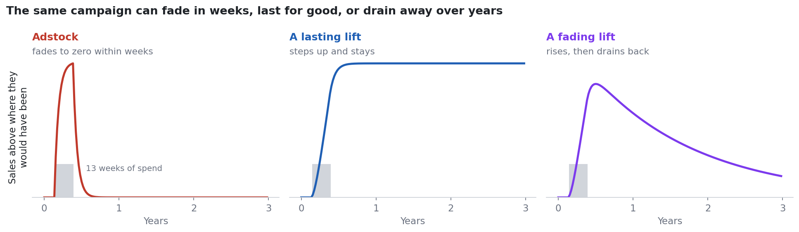
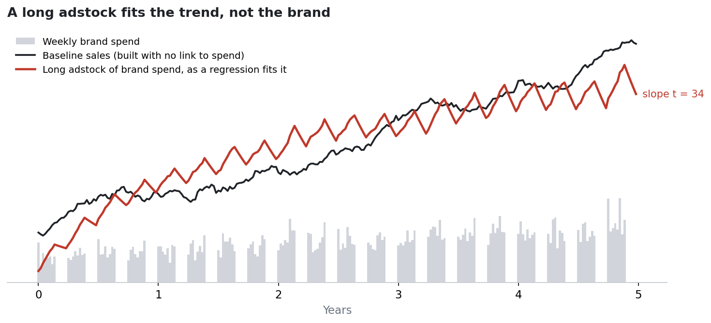
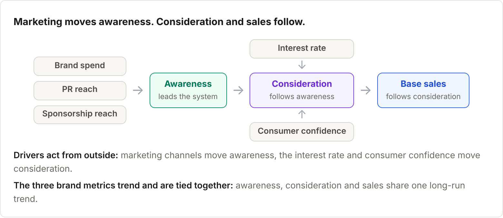
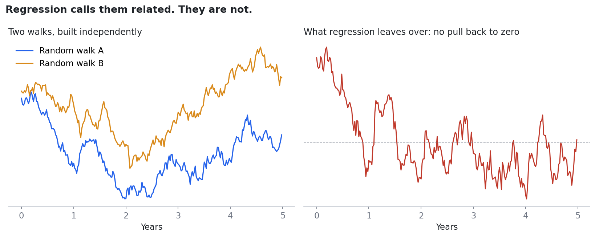
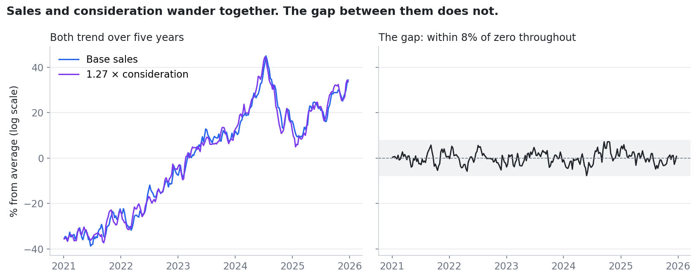
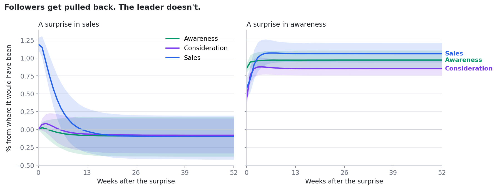
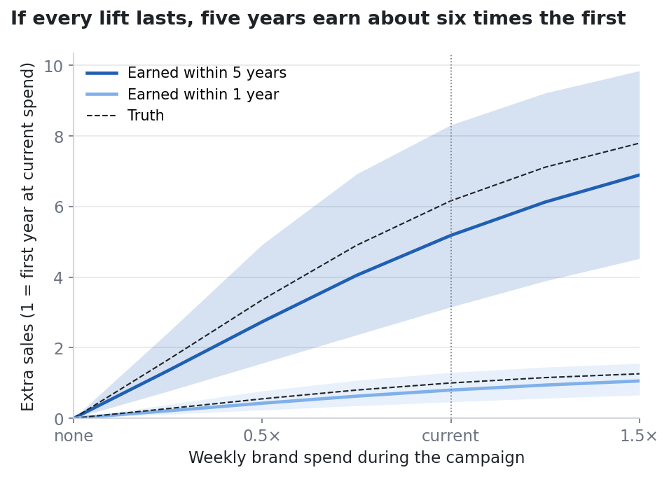
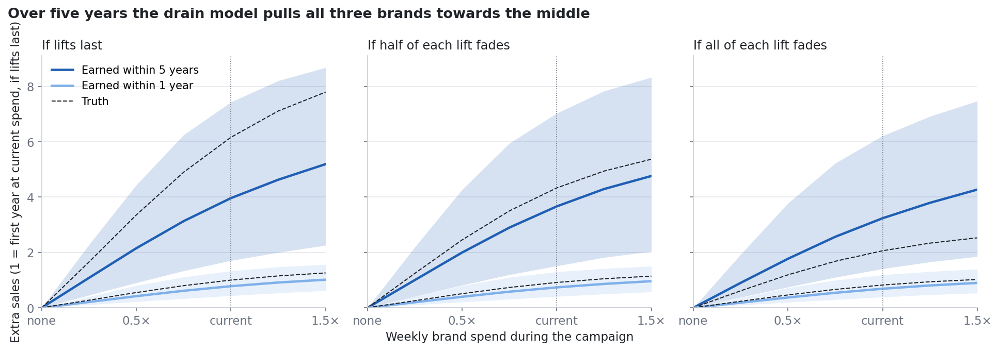

§1 · Introduction
Introduction
Brand teams and media mix models disagree about time. Brand teams say a campaign builds the brand for years. A media mix model (MMM) usually says its effect is gone within a couple of months.
Both can be right. An MMM measures the short-term lift in sales that follows a burst of spend. What it struggles to see is the slow climb: more people who know the brand, more who would consider it, and a higher level of sales that stays.
Les Binet and Peter Field made this case with the IPA databank in The Long and the Short of It (2013). Measuring the effect for one brand from its own data is harder. Peter Cain has shown how. In a 2022 paper he ties brand metrics to base sales with cointegration, so a lasting lift in awareness carries through to sales.
The chart shows three ways a campaign can play out:
- Adstock. The lift fades back to zero within weeks. This is what an MMM assumes.
- A lasting lift. Awareness moves to a new level and sales follow it up for good. This is what Cain's model assumes.
- A fading lift. Awareness rises and then drains slowly back towards where it was heading. For most brands this is probably the more realistic case. Cain's model doesn't allow it, so this article adds it.

The gap between these is the whole question. Over five years a lasting lift earns many times what an MMM credits it with. A fading lift earns less, but still more than adstock suggests. Telling the two apart from the data is hard.
This article has three aims:
- Explain Cain's method, in which every lift lasts (Part 1).
- Extend it so that a lift can fade. I call the extension the drain. It is mine, not Cain's (Part 2).
- Ask whether the data a real brand has can recover the parameters. Most brands have five years of weekly data or less, one brand tracker and no experiments (Part 3).
The short answer: the 1-year return is firm either way. The 5-year return isn't, because the data say little about how much of a lift fades. A long dark spell is the best evidence there is, and even a year dark doesn't settle it alone.
We illustrate each step on a brand we simulated, so we always know the right answer.
Part 1
Cain's method
§2 · Adstock
The problem with adstock
An MMM explains weekly sales with spend, price, seasonality and a baseline. Spend enters through adstock: each week keeps a share of the previous week's effect, so a burst of TV fades out over a few weeks. That suits the question an MMM is built for: how did this quarter's spend move this quarter's sales?
It doesn't suit brand. The usual fix is a second, much longer adstock for brand spend: a short decay for activation and a long one for brand building. Peter Cain calls this the adstock illusion.
The problem is the trend. Sales drift over years. A slowly decaying spend series drifts too. Put one against the other and they line up whether or not brand drives sales. The long adstock ends up fitting the drift in the baseline, and it tells us nothing about how brand building works.
The chart shows it. The baseline is a slow trend we built with no link to spend at all. The long adstock of brand spend climbs alongside it, and a regression happily credits brand with the climb.

Cain's alternative separates the two. Short-term activation is the week-to-week movement around base sales. Long-term brand building is the base itself: the slow level of sales, which moves with awareness and consideration.
That needs three things an MMM leaves out:
- The brand metrics, alongside sales.
- The trends treated as information, not something to remove.
- A way for a change in one series to carry through to the others.
§3 · The brand
The brand we built
A brand works through a funnel. Marketing makes people aware of the brand. Some of those people come to consider it, and some of those buy. Each step feeds the next, so a lasting rise at the top should show up lower down.
Brand trackers measure the middle of the funnel:
- Awareness is the share of people who know the brand.
- Consideration is the share who would think about buying it.
Together with sales these form the system. Sales here means base sales: sales without the short-term lift from performance media and promotions. §10 covers how to get that series right.
Around the system sit the drivers. Brand spend, PR and sponsorship push on awareness. Interest rates and consumer confidence push on consideration from outside. The drivers move the brand, but the brand does not move them.

To show each step of the method we simulated five years of weekly data for a brand like this. Because we built it, we know the right answer at every step. This is what we built in:
| What we built in | Setting |
|---|---|
| Funnel order | Drivers → awareness → consideration → sales |
| How far a lift carries | A lasting 1% rise in awareness ends up as about 0.9% in consideration and about 1.1% in sales |
| Who catches up | Sales close about a quarter of any gap to consideration each week. Consideration closes about a fifth of its gap to awareness. Awareness never catches up to anything: it leads |
| Weekly surprises | News and competitors hit all three series in the same week |
| Does a lift last? | Yes, for good, as in Cain's model. Part 2 adds two versions where lifts fade |
The rest of the article shows how the method recovers each of these from the data alone.
§4 · Trends
Why trending data fools regression
Most analysts would start with a regression. Regression assumes each series is stationary: it moves around a stable average, and after a shock it comes back.
Brand series don't behave like that. Each week starts from where the last one ended, and nothing pulls the series back to a fixed level. Awareness that rises after a strong year stays risen until something else moves it. A series like this is non-stationary. Economists say it has a unit root.
Regress one trending series on another and the two will often look related when they aren't. This is a spurious regression, first shown by Granger and Newbold (1974)90034-7).
The chart shows two random walks that we built completely independently. Regress one on the other and the slope comes out highly significant. The leftover gap between them wanders as much as the series do, which gives the game away.

This isn't bad luck. Across 1,000 pairs of unrelated random walks of five years each, 84% gave a significant slope.
The usual fix is to difference the data: model the weekly change instead of the level. Weekly changes are stationary, so the regression is safe. But differencing throws away the levels, and the levels hold the long-run story. A campaign that lifts awareness for good shows up only in the level.
This gives a simple way to label series. A series that is stationary as it stands is I(0), "integrated of order zero". A series that becomes stationary once differenced is I(1). Trending brand series are usually I(1). The method in the rest of this article is built for I(1) series.
To sort the series we use the Augmented Dickey-Fuller (ADF) test. It starts from the assumption that a series has a unit root and asks whether the data are strong enough to reject it. A small p-value means the series is stationary, so I(0). A large one means we can't rule out a unit root. We then test the weekly changes: if those are stationary, the series is I(1).
| Series | ADF p-value (level) | Verdict |
|---|---|---|
| Base sales | 0.80 | Trending, I(1) |
| Awareness | 0.74 | Trending, I(1) |
| Consideration | 0.73 | Trending, I(1) |
| Interest rate | 0.58 | Trending, I(1) |
| Brand spend | <0.001 | Stable, I(0) |
| PR reach | <0.001 | Stable, I(0) |
| Sponsorship reach | <0.001 | Stable, I(0) |
| Consumer confidence | <0.001 | Stable, I(0) |
On the brand we built, the three brand series all fail to reject a unit root, and their weekly changes are clearly stationary, so all three are I(1). Brand spend, PR, sponsorship and consumer confidence move around a stable level, so they're I(0). The interest rate trends like the brand series, so it's I(1).
So we need a method that keeps the levels without being fooled by them. That method rests on cointegration.
§5 · Cointegration
Cointegration: the drunk and her dog
Some trending series are tied together. Each one wanders, but a weighted gap between them does not: it keeps coming back to a stable level. Series like these are cointegrated. The gap is the cointegrating relationship, and its stable level is the long-run equilibrium. The idea comes from Engle and Granger (1987).
Michael Murray gave it its best-known picture in "A Drunk and Her Dog" (1994). A drunk leaves the pub and wanders home. Her path is a random walk. So is her dog's. Watch either alone and you can't say where it will be in ten minutes. But when they drift too far apart, she calls and the dog comes back towards her. Both paths wander, but the distance between them does not.
In our brand one such tie runs between consideration and sales. Each series trends, but the gap between log sales and about 1.25 times log consideration stays close to its average for all five years.

We can test for this with the ADF test from §4: take the gap and ask whether it is stationary. For the two unrelated random walks in §4 it is not. For sales and consideration it clearly is. This two-step check is the Engle-Granger test.
A second tie runs between awareness and consideration. Two ties among three series leave one shared trend. In our brand that trend belongs to awareness, and it is why a lasting lift in awareness carries through to sales. §7 shows why.
The number of ties is the cointegration rank. With more than two series, Johansen's trace test finds it by asking in turn: none, at most one, at most two? It stops at the first answer it can't reject. On our brand it stops at two, the number we built in.
The test is a guide rather than a ruling. On short histories it often finds too few ties (§10). A business view of the funnel is a useful check: three brand series sharing one trend should have two ties.
§6 · The model
The model in one equation
A vector error correction model (VECM) describes the weekly change in each brand series and splits it into parts. Each part has a plain reading for the brand.
Δyt = αβ′yt−1 + ΓΔyt−1 + Bxt + c + εt
The left side is this week's change in log sales, log awareness and log consideration. Changes in logs read as percentage changes. Bold letters stand for all three series at once, so this is really three equations fitted together.
The parts, in order:
- Error correction (αβ′y). β′yt−1 measures how far each tie from §5 was stretched last week, for example how far sales sat from 1.25 times consideration. α turns that stretch into this week's move. This is what keeps the series together. §7 looks at it closely.
- Momentum (ΓΔy). Last week's changes carry into this week. If awareness jumped last week, some of that jump shows up in consideration now. These effects fade within weeks.
- Drivers (Bx). This week's brand spend, PR and other drivers push on each series. Drivers that move around a stable level enter as they are. A trending driver, like the interest rate, enters as its weekly change: a trend can't explain movement in a gap that keeps coming back.
- Growth (c). A constant that lets each series grow at a steady rate.
- Shock (ε). The part of this week that nothing in the model predicts. The three shocks are correlated, because news and competitors hit the series in the same week.
Two choices remain: how many weeks of momentum to include and how many ties. Information criteria such as Hannan-Quinn choose the momentum lags, and the rank test from §5 chooses the ties. For our brand that gives one week of momentum and two ties.
We fit the model with Bayesian sampling, so every estimate comes with an interval.
§7 · Leaders
Who leads and who follows
Go back to the drunk and her dog. When they drift apart, someone has to move to close the gap. In Murray's story both do. In a brand it is usually one-sided, and which side moves tells us how the brand works.
That is what α measures. A series with a large α on a tie is a follower: when the tie is stretched, it moves to close the gap. A series with α near zero on every tie ignores the gaps. It leads, and the others follow it.
In the brand we built:
- Sales follow consideration, closing about a quarter of any gap each week. Half of any gap is gone in under three weeks.
- Consideration follows awareness at a similar pace.
- Awareness follows nothing.
A series that never responds to the gaps is called weakly exogenous. Its moves are never pulled back. That is why the shared trend from §5 belongs to awareness.
The chart shows what this means. Give sales a surprise jump and the tie to consideration is stretched. Sales are pulled back down within weeks, and nothing else moves. Give awareness a surprise jump instead and nothing pulls awareness back. Consideration and then sales climb to meet it and stay there.

That is the long-run story in one picture. Shocks to followers fade. Shocks to the leader last, and they carry down the funnel. For a brand team the question "does brand last?" becomes two questions: does awareness lead, and do the lifts that marketing gives it stay (Part 2)?
Fitted to the data alone, the model recovers this pattern. Sales and consideration have clearly non-zero α. Awareness's α is close to zero on both ties.
§8 · Response curves
From a campaign to a response curve
The pieces so far explain how the brand works. A budget decision needs something else: what a campaign earns. To get it we follow one campaign through the whole system.
Spend reaches awareness. Take a 13-week burst of brand spend. Before it moves awareness, it goes through the two steps familiar from MMM:
- Carryover. Each week keeps a share of the last week's spend, so the push on awareness builds and then tails off.
- Diminishing returns. A saturation curve means each extra pound moves awareness a little less than the one before.
These sit inside the drivers. The ties, momentum and growth are untouched.
Awareness reaches consideration, partly in the same week. Momentum carries last week's awareness into this week's consideration. Some of the effect may land in the same week, and that is harder to measure. Awareness and consideration share their weekly shocks (§6), so a plain regression of one on the other finds a same-week link even when there is none.
The fix, as in Cain (2022), is an instrument. Brand spend moves awareness but reaches consideration only through awareness. So its effect on consideration, divided by its effect on awareness, is the same-week link. That assumption is a business judgement, not something the data can settle (§10).
Consideration reaches sales. The ties then pull consideration and sales up to meet the new level of awareness, and hold them there.
From sales to a response curve. Add up the extra sales each week and we have what the campaign earned. Because the ties carry the lift forward, the total keeps growing with the window, so we report it at one year and at five. Repeat for campaigns of different sizes, from nothing up to half as much again as current spend, and we have a response curve.
The chart shows the curve for the brand we built, fitted with Cain's model. Every lift lasts, so every week after the campaign adds the same extra sales, and the 5-year curve sits far above the 1-year curve.

This is the payoff of Cain's method. Within a year a campaign at current spend earns 0.8 on the chart's scale, against a true 1.0. Within five years it earns 5.2, against a true 6.2. Both intervals hold the truth. Five years earn about six times the first year, because the lift never goes away.
All of that rests on one assumption: that every lift lasts. Part 2 relaxes it.
Part 2
Letting lifts fade
§9 · Fading lifts
Adding a drain
In Cain's model nothing pulls a lift back. Once a campaign moves awareness, the ties carry the whole lift down to sales and keep it there. That is why the 5-year return in §8 is so large.
It is a strong assumption. It says a campaign that ran five years ago lifts this week's sales as much as it ever did. People forget brands, and rivals answer campaigns with their own. The fading lift in §1 is the alternative: awareness rises, then drains slowly back.
So I added a term that lets a lift fade. I call it the drain. This extension is mine, not Cain's. With the drain switched off, the model is his.
Δyt = αβ′yt−1 + ΓΔyt−1 + Bxt − draint + c + εt
Each week a little of the lift that past spend created drains away. Two numbers set it: the share of each lift that eventually drains, and the half-life of the drain. With a share of zero nothing drains and every lift lasts, which is Cain's original model. With a share of one the whole lift drains away over time.
This is where a fading lift differs from a long adstock. A long adstock in an MMM is fitted against the trend in sales, so it soaks up drift (§2). Here the trends are handled by the ties first. The drain only asks how much of a driver's lift is later given back.
The priors are deliberately loose. The drain share is flat between zero and one. The half-life is centred on a year but allows anything from a few months to several years.
For the technically minded: draint = φ(1−δ) Σk≥1 δk−1 ct−k, with δ = 0.51/h and c the driver's contribution to growth. φ is the share that drains and h the half-life in weeks. Priors: φ ~ Beta(1, 1); h ~ LogNormal(log 52, 0.75), whose middle 90% runs from about four months to four years.
To test it we built two more versions of the brand, the same as before apart from the fade. In one, half of each lift drains away. In the other, all of it does. The draining share has a half-life of a year. We fitted all three versions with the drain, including the brand whose lifts last:
- If lifts last, the 5-year curve still sits far above the 1-year curve, as in §8.
- If half of each lift fades, the 1-year curve barely moves and the 5-year curve comes down.
- If all of each lift fades, the 1-year return is about a fifth lower than for a lasting brand. The 5-year return is about a third of the lasting brand's, because most of the lift drains away within a couple of years.

Over the first year the three brands look much alike, and the model's intervals hold the truth for all three. Over five years they differ by three times. At current spend the true 5-year returns are 6.2, 4.3 and 2.1 on the chart's scale. The model's are 4.0, 3.7 and 3.2. It pulls all three towards the middle. On the lasting brand that costs something: Cain's model gave 5.2 in §8, and the drain model gives 4.0. Five years of data say little about how much fades. Part 3 asks how little, and what helps.
Part 3
Can we estimate it?
§10 · Estimating it
What the data can tell us
Part 2 ended with the model pulling all three brands towards the middle. That raises the third aim: can the data a real brand has recover the parameters? Most brands have five years of weekly data or less, one brand tracker and no experiments.
Real data won't tell you when something is off. So for each common problem we changed the simulation to build it in, refitted, and looked at what broke. The first three are about the fade, the question Part 2 left open. The rest are about the model's structure and the data that goes in.
| Problem | What happened | What to do |
|---|---|---|
| Lifts that fade | Assuming lifts last overstated the 5-year return by 2 to 6 times. The drain model ran 1.3 to 3 times high, and about a quarter low when lifts last | Fit with the drain. Treat the 5-year return as a range |
| Going dark | A year off halved the uncertainty in how much fades, but didn't settle it | Keep dark weeks in the data. Plan a dark spell if you can |
| Brand run in pulses | The 1-year intervals were about half as wide. How much fades barely narrowed | Go dark for longer than you expect the lift to last |
| Too little history | With three years the rank test found the right number of ties under half the time | Use four or more years. Check the rank against the funnel |
| The leader looks like a follower | One data set in ten gave awareness a small pull back | Compare awareness's α with the followers' |
| A channel left out | Brand spend took the missing channels' effect and came out about 40% too high | Include every brand activity |
| Budgets that follow performance | Not built in. On real data the drivers' effects are biased | Granger-test spend on past brand metrics first |
| Carryover or diminishing returns left out | About half of brand spend's effect was missed, or big moves misjudged | Include both. Trust the curve near spend you've seen |
| A same-week link with the wrong instrument | The link came out too large, and the test rarely noticed | Choose instruments on business grounds |
| Base sales built the wrong way | The long run held. The short run didn't | Total sales minus the MMM's short-term contributions, unsmoothed |
| Seasonality | The rank test found the right ties one time in five | Seasonal terms in sales. Rank test on a deseasonalised copy |
| Monthly instead of weekly data | Effects within the month looked like a same-week link | Use weekly data where it exists |
| Short samples | Classical intervals held the truth about 60% of the time, not 90% | Prefer Bayesian intervals |
Can the data tell how much fades?
Lifts that fade.
- What we changed: every lift drained away, with a half-life of six months, one year or two.
- What happened: the model that assumes lifts last overstated the 5-year return by 2 to 6 times. Its intervals missed the truth every time. The model with a drain did better but still ran high, by 1.3 to 3 times, and on a brand whose lifts last it ran about a quarter low. Its intervals held the truth in most data sets, but they were wide. The data alone struggle to say how much of a lift fades, so the estimate sits near the middle either way.
- What to do: fit with the drain. Treat the 5-year return as a range and the 1-year return as firm.
Going dark.
- What we changed: brand spend was switched off for six months or a year, mid-sample.
- What happened: a dark spell is the clearest evidence there is. If lifts fade, sales sag once spend stops; if they last, sales hold. A year off halved the uncertainty in how much fades and brought the 5-year return much closer to the truth. It still didn't settle the question on its own.
- What to do: keep any dark weeks in the data. If the business can afford it, a planned dark spell in one region or for one quarter is worth more than any modelling choice.
Brand run in pulses.
- What we changed: the same annual budget spent as two 13-week campaigns a year at twice the weekly spend, with nothing in between, instead of always on.
- What happened: pulses barely narrowed how much fades. The 13-week gaps are short next to a year's half-life, so the drain has little time to show. They did pin down the 1-year return, with intervals about half as wide, and brought the 5-year return a little closer to the truth.
- What to do: pulsing is no substitute for a long dark spell. If the business can test, go dark for longer than you expect the lift to last.
Is the structure right?
Too little history.
- What we changed: cut the five years to three.
- What happened: the rank test found the right number of ties under half the time, against four in five with five years. Most misses found too few.
- What to do: use four or more years of weekly data if you can. Check the rank against the funnel: three brand series sharing one trend should have two ties.
The leader looks like a follower.
- What we changed: nothing; this happens by chance.
- What happened: in about one data set in ten the model gave awareness a small but clear pull back, which the truth doesn't have.
- What to do: look at awareness's α directly. If it is small next to the followers', treat awareness as the leader.
A channel left out.
- What we changed: dropped PR and sponsorship from the model, on monthly data.
- What happened: brand spend took their effect and came out about 40% too high, against about 12% too low with every channel in.
- What to do: include every brand activity, even ones without a budget line.
Budgets that follow performance.
- What we changed: nothing in our brand; the drivers are set outside it by construction.
- What happened: on real data, if spend rises after good weeks, the drivers' effects are biased.
- What to do: before fitting, test whether past brand metrics help predict spend (a Granger test). If they do, the drivers can't be treated as outside the brand.
Carryover or diminishing returns left out.
- What we changed: fitted without carryover, or with a straight line instead of a saturation curve.
- What happened: without carryover, the model missed about half of brand spend's effect. A straight line misjudged big moves badly, putting the effect of doubling spend at more than twice the truth. Near current spend the two barely differed.
- What to do: include both. Trust the curve most near the spend levels your data has seen.
A same-week link with the wrong instrument.
- What we changed: assumed brand spend reaches consideration only through awareness, when in truth it also had a direct path.
- What happened: the link came out too large, and the test for this rarely noticed.
- What to do: choose instruments on business grounds and say why. If the question is only what a campaign earns, the link can be left out: the return uses total effects either way.
Is the data right?
Base sales built the wrong way.
- What we changed: fed the model four versions of base sales: the true base, total sales minus the MMM's short-term contributions, total sales with the short-term drivers alongside, and the MMM's smooth baseline.
- What happened: the long-run return came within a few per cent of the truth every time. The short run didn't. Noise left in from total sales made sales look quicker to adjust than they are. The smooth baseline made them far too slow, and in most fits made sales look like the leader, a link that doesn't exist.
- What to do: use total sales minus the MMM's short-term contributions, and don't smooth it. Trust the long-run return more than any speed or half-life.
Seasonality.
- What we changed: added a seasonal pattern to sales.
- What happened: with the seasonal pattern left in, the rank test found the right number of ties about one time in five. On a deseasonalised copy it was four in five.
- What to do: keep seasonality in base sales and give the sales equation seasonal terms. Run the rank test on a deseasonalised copy.
Monthly instead of weekly data.
- What we changed: summed the weeks into months.
- What happened: effects that take a week or two now land "in the same month". The same-week link picks them up even when there is no same-week link at all.
- What to do: use weekly data where it exists. With monthly data, read a same-period link as "within a month".
Short samples.
- What we changed: cut the data to 60 periods.
- What happened: on five years of weekly data, classical and Bayesian fits gave the same estimates. On 60 periods the classical intervals for the ties held the truth only about 60% of the time when they should have held it 90%. The Bayesian intervals stayed close to 90%.
- What to do: with short histories, prefer Bayesian intervals. That is the main practical reason to sample.
§11 · Bringing it together
The first year is firm. The fifth is a range.
A media mix model sees the short-term lift that follows a campaign. It misses the slow climb in base sales that comes when a brand grows. This article set out to measure that climb, with three aims.
Explain Cain's method. Brand metrics and sales trend, and cointegration ties them together so a lasting lift in awareness carries down to sales. On the brand we built, the method found the two ties, picked out awareness as the leader and recovered the response curve. At current spend a campaign earned 0.8 within a year and 5.2 within five on the model, against a true 1.0 and 6.2. Both intervals held the truth.
Let a lift fade. The drain, my extension, lets part of each lift drain away. On three versions of the brand, where lifts last, half fade or all fade, the true 5-year returns are 6.2, 4.3 and 2.1. The drain model gives 4.0, 3.7 and 3.2. Its 1-year intervals hold the truth for all three.
Can the data recover it? For the 1-year return, yes, whichever way the brand works. For the 5-year return, not well. Assume every lift lasts when lifts fade and the 5-year return comes out 2 to 6 times too high. Fit with the drain and it sits near the middle either way: 1.3 to 3 times high when lifts fade, about a quarter low when they last. The data say little about how much fades. A year dark halved that uncertainty, and even that didn't settle it.
What to report
The 1-year return is the number the data pin down well, whichever way the brand works. Report it with confidence. The 5-year return depends on whether lifts last, which the data struggle to settle. Report it as a range: the figure if every lift lasts, alongside the drain model's estimate and its interval. A going-dark scenario helps a brand team see what is at stake: what happens to sales if brand spend stops for a quarter? If the brand has ever gone dark, say what sales did.
Two limits
No setting removes these:
- It shows what predicts what. Reading the results as cause needs assumptions you should write down: drivers set outside the brand, and instruments that hold.
- The 5-year answer rests on whether lifts last. The data will rarely settle that alone. A dark spell, past or planned, is the best evidence you can add.
What comes next
The method answers a lot, but the hardest question is still the one in the title. A few directions would help:
- Telling lasting from fading. The data alone struggle to say how much of a lift drains away. Planned tests would add the missing evidence: going dark in some regions and not others for longer than the lift is expected to last. So would priors on fade rates drawn from many brands, such as the IPA databank.
- Brands without a tracker. Many brands, especially smaller ones, don't have awareness or consideration data. Share of search, a brand's share of Google searches in its category, is a cheap, weekly, always-on alternative. Les Binet's work for the IPA found it tracks share of market. A system built on share of search and sales would be worth testing as a stand-in for the funnel. The open question is whether it leads sales the way awareness does.
- Pooling across brands and markets. One brand rarely has enough history to pin down the drain. A hierarchical model fitted across regions or sister brands could share that information.
- One model instead of two. Base sales are handed over from an MMM, and §10 showed that is where the short run goes wrong. Fitting the short-term and long-term parts together would carry the uncertainty through rather than losing it at the handover.
- Ties that change. A pandemic, a change to the tracker or a repositioning can move the long-run links. Allowing the ties to shift at known dates, or slowly over time, would make the model safer on long histories.
- Competitors and the category. Our brand moves on its own. Real brands share a market, and part of a lasting lift may come at a rival's expense or from growth in the category.
Everything in this article was fitted with bayesian_vecm, an open-source Python package with Cain's model, the drain, carryover, saturation, same-week links and every check from §10. The documentation is at raz1470.github.io/bayesian_vecm. To try it on your own brand, start with the notebook built for your own data: edit one cell with your column names, costs and options, and it runs the checks in order and draws response curves at one year and five, with the drain on by default. The method itself is Peter Cain's, set out for marketing over a series of papers, and the package is an open Bayesian version of it. Read his 2022 paper for the method on real brand data. My thanks to him.
References
- Binet, L. and Field, P. (2013). The Long and the Short of It: Balancing Short and Long-Term Marketing Strategies. IPA.
- Binet, L. (2020). Share of Search as a predictive measure. IPA EffWorks Global 2020.
- Cain, P. M. (2022). Modelling short- and long-term marketing effects in the consumer purchase journey. International Journal of Research in Marketing, 39(1), 96–116.
- Cain, P. M. (2025). Long-term advertising effects: The Adstock illusion. Applied Marketing Analytics, 11(1), 23–42.
- Engle, R. F. and Granger, C. W. J. (1987). Co-integration and error correction: Representation, estimation, and testing. Econometrica, 55(2), 251–276.
- Granger, C. W. J. and Newbold, P. (1974). Spurious regressions in econometrics. Journal of Econometrics, 2(2), 111–120.
- Johansen, S. (1991). Estimation and hypothesis testing of cointegration vectors in Gaussian vector autoregressive models. Econometrica, 59(6), 1551–1580.
- Murray, M. P. (1994). A drunk and her dog: An illustration of cointegration and error correction. The American Statistician, 48(1), 37–39.
- Pesaran, H. H. and Shin, Y. (1998). Generalized impulse response analysis in linear multivariate models. Economics Letters, 58(1), 17–29.